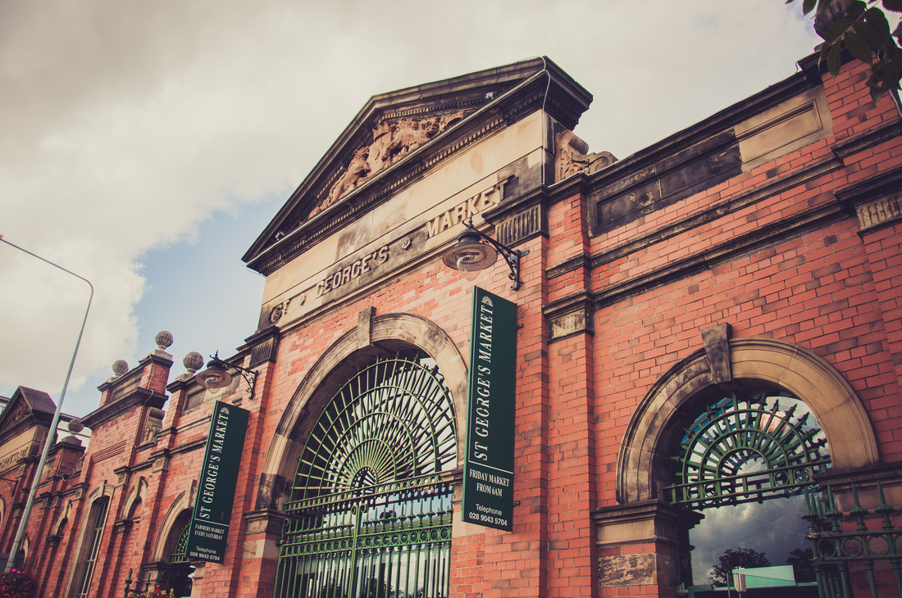
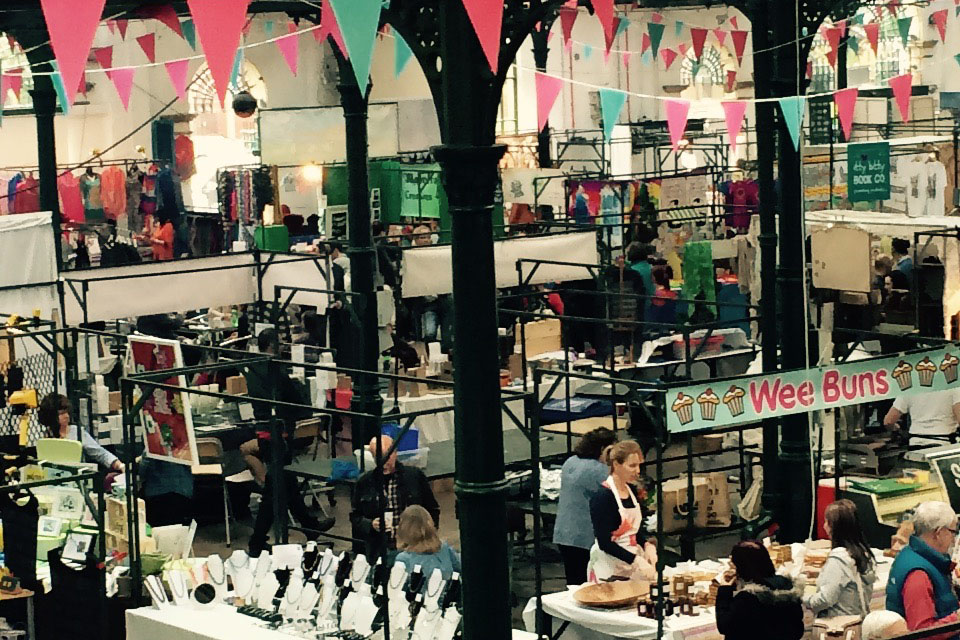

- 
-

- 
What’s on this November at St George’s Market?
2 Nov 2018 - 30 Nov 2018
-With winter slowly approaching, get yourself into the festive spirit and come along to St George’s Market every Friday, Saturday and Sunday to enjoy some of the best local live entertainment.
-Our award-winning market hosts artists both old and new each and every weekend, so join us for some fun, food and shopping.
Autumn Twilight Market
6 Nov 2018 - 7 Nov 2018
-Wrap up and join us for the Autumn Twilight on Tuesday 6 and Wednesday 7 November, from 4pm-11pm at St. George's Market. Travel back in time at our award-winning market, when St. George’s will be transformed into an enchanting autumn woodland, which was once the site of Cromac woods – 'the Forest of Belfast'.
-Visitors can sample local food, drink and craft stalls, as well as enjoy a programme of live entertainment and cookery demonstrations against a spectacular backdrop of twinkling twilights. Please note: all of our Twilight Market events are strictly over 18s after 9pm.

Christmas at St George’s Market
24 Nov 2018 - 23 Dec 2018
St George’s Market has Christmas covered this year. We’re kicking off the festive season on 24 November, with Father Christmas making his grand arrival at the market.
While Santa spreads his festive cheer, our traders will bear treats for one and all. From locally grown ingredients for that mouth-watering Christmas feast to one-of-a-kind handmade gifts for that perfect treat.
And you can count on our cracker selection of live performances from local musicians to help get you in the festive mood, while our children’s activities will help add a touch of magic to your little one’s Christmas experience.
Plus don’t miss our Christmas Twilight Market at St George’s Market on Tuesday 11 and Wednesday 11 December. Where you will step into a winter wonderland of your favourite local traders with a touch of Christmas sparkle.